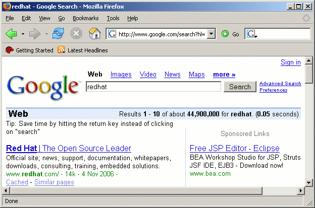
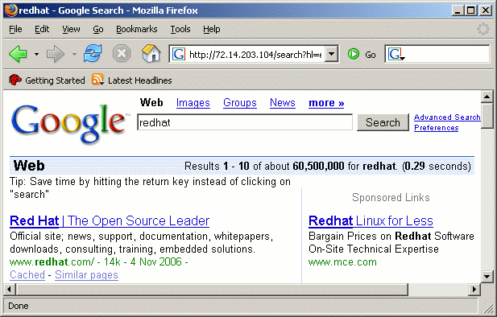
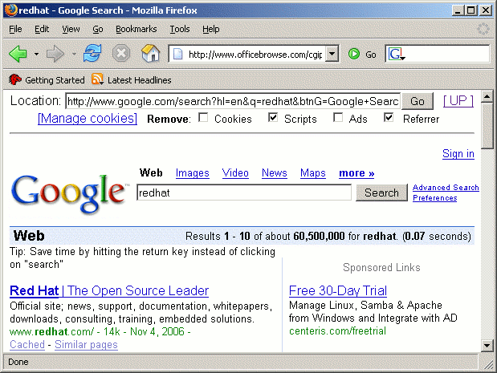
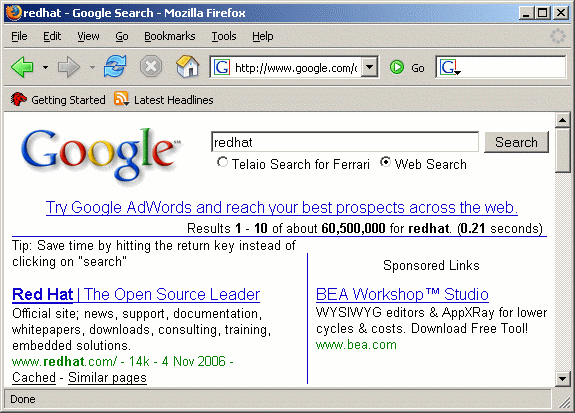

~ Bypassing Google's geotargeting ~
When there's a will, there's a way!
|
|
Published @ Searchlores in November 2006
Version 0.01 November 2006 | By
Nemo
|
|
Google is well known for his geotargeting and this is the way
how Google makes money: –showing adds to geographically targeted
searchers–. This wouldn't be a problem, if it
weren't for the fewer search results got by searchers outside the USA...
This amazingly interesting and very important short essay by Nemo should be carefully
printed and then read, and re-read, and again read, to your children, slowly,
when the commercial night cometh, the creativity wind falls low, and
the trees of conformism swing slowly to and fro.
Gosh I'm glad that people like Nemo still spread knowledge! :-)
|
The problem
Google is well known for 'customizing' his search results to please governments in several countries, not only in China (here's a 2Mb list of censored sites), but leaven in
Europe, as shown by several
studies of Jonathan Zittrain and Benjamin Edelman. Usually searchers
can also customize Google to get less biased search results by
following the link Google.com in English.
If you follow the previous link, Google still knows from where do you
come from, as shown by the link present on google.com homepage –Go
to Google your country here–. Searchers wouldn't care
less, if it weren't for the fewer search results
they get outside the USA. It goes without saying that this does not
only affect non Americans, but also Americans traveling or working
abroad and perhaps even american soldiers and diplomats...
Some Solutions
Before seeing the solutions, lets for the sake of an example see how many search
results we get for the query redhat on www.google.com:

An now the solutions:
Use an american Google IP
If you use an american IP to which www.google.com
resolves in USA, 72.14.203.104 for instance, you noticeably get more
search results for the query redhat:

So the question is how do we know to which IPs www.google.com resolves in USA?
To begin we need a tool to resolve the host name, for that we can use a ping, or a DNS lookup
to get an IPcorresponding to www.google.com. To complicate things we
need to run one of these tools in USA to get an american IP to which
the host www.google.com resolves, otherwise you'll get an IP to which
your local Google resolves.
As I'm outside US, the simplest way is using an american site which kindly would run one of these tools for me.
With Yahoo!, thanks to its advanced search syntax, is fairly easy to find such a site, because we can restrict search results to north america (region:northamerica), excluding Canada (-domain:ca), to webpages containing a box (feature:form) where we can put the host (host) to be pinged (ping). Translating in Yahoo! language we get the following query:
ping host region:northamerica -domain:ca feature:form
A quick analysis of search results gives the following list, which is by no means complete:
Using those webtools I got the following american IPs for www.google.com:
- 72.14.203.104
- 64.233.161.104
|
- 64.233.161.99
- 64.233.179.99
|
As the american IPs for www.google.com might change
from time to time, you are well advised to run, from time to time, one
of the previous webtools to get a fresh american IP. You can also see
how much you are loosing by searching on www.google.com, instead of
72.14.203.104, by filling your favorite keywords in the following boxes
and comparing the number of search results, which will open in a new
window.
Use an american webproxy
Another way of getting more for the same query is using an american web proxy, www.officebrowse.com for instance. Here's a screenshot for the query redhat:

In this case the question is how to get webproxies
located in USA? Once more this task is fairly easy if you use Yahoo! So
lets search for a north american (region:northamerica) webproxy, excluding Canada (-domain:ca).
One of the most common softwares used for webproxies is the nph-proxy
and its presence is revealed by the presence of the following file in
the url: nph-proxy.pl (inurl:"nph-proxy.pl"). So the corresponding query is:
region:northamerica -domian:ca inurl:"nph-proxy.pl"
After analyzing the search results, I got the following list of webproxies which were sufficiently quick for my taste:
The previous list is not intended to be complete.
You can get a taste of what you are not getting when you use
www.google.com, by filling your favorite keywords in the following
boxes and comparing the number of search results, which will open in a
new window.
Use Google's custom search engines
Another way of getting the job done is by using a custom Google search engine, the Cumberland's County search engine, for instance. Follows a screenshot of Telaio's search engine for the query redhat:

This essay is a consequence of the good question put by fravia+ @ seekers' message board:
Now the real price would be how to fetch a google/gogle/ncr site that DOES NOT KNOW where you are coming from.
That is a question I also have been wandering for
quite some time and I remembered that I had seen local search engines
powered by Google which also allowed global web search... Lets see if
we can find such a local search engine
(title:search the title should describe what the page is all about), containing a box (feature:form) where I can put my keywords, powered by Google ("powered by Google" Google loves to put that phrase on his pages) and located in north america (region:northamerica), excluding Canada (-domain:ca) and Google's own site (-domain:google.com) to defeat Google geotargeting... Translating in Yahoo! language, we have the query:
region:northamerica "powered by google" -domain:google.com feature:form title:search -domain:ca
On those search results, the following description seemed quite promising:
Google Search - Cumberland County NC
Cumberland County NC is celebrating its past and embracing its future
... Open search results in: New window. Current window. Frame below ...
www.co.cumberland.nc.us/google_search.asp - 13k - Cached - More from this site
This site is using a custom Google search:
http://www.google.com/custom?hl=en&lr=&cof=AH%3Aleft%3BS%3Ahttp%3A%2F%2Fwww.co.cumberland.nc.us%2F%3B
&domains=www.co.cumberland.nc.us&q=&btnG=Search&sitesearch=
The previous URL is quite interesting, as it
provides more arrows to use in more search engines, if necessary... By
the shear number of Google's custom search engines, as shown by the
following query, we'll never run out of such search engines:
"google.com/custom" client cof
You can get a glimpse of what you are not seeing
when you use www.google.com, by filling your favorite keywords in the
following boxes and comparing the number of search results, which will
open in a new window.
BTW delete your cookies before doing these queries, because otherwise Google
already know from where do you come from and don't forget to change the
Accept-Language header sent by your browser to en, either directly on your
browser, or use proxomitron to do the job:
In = FALSE
Out = TRUE
Key = "Accept-Language: English"
Match = "*"
Replace = "en"
Otherwise you'll be greeted with Google on your own language as you asked for.
(c) Nemo 2006 nem0@nowhere.org
replace nowhere by linuxmail.

(c) III Millennium: [fravia+], all rights reserved, reversed, reviled and
revealed